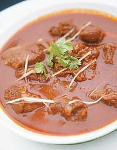

Lal Maas Recipe

Description
Laal maas is a meat curry from Rajasthan, India. It is a mutton curry prepared in a sauce of yoghurt and hot spices
such as red Mathania chillies. This dish typically is very hot and rich in garlic. The gravy may be thick or liquid and is
eaten with chapatis made out of wheat (usually eaten in summers) or bajra (source: Wikipedia)
Ingredients
- Main Ingredients:
- 500g Mutton (bone-in, cut into pieces)
- 4 tbsp Mustard Oil
- 2 Onions (finely sliced)
- 2 Tomatoes (pureed, optional)
- 2 tbsp Ginger-Garlic Paste
- 3-4 Dried Red Chilies (soaked in warm water)
- 1 tbsp Red Chili Powder (preferably Rajasthani Mathania chili powder)
- 1 tsp Turmeric Powder
- 1 tsp Coriander Powder
- 1 tsp Garam Masala
- 1 tsp Cumin Seeds
- 2 Bay Leaves
- 4-5 Cloves
- 4-5 Black Peppercorns
- 1-inch Cinnamon Stick
- 2-3 Green Cardamoms
- 1 cup Yogurt (whisked)
- Salt to taste
- 1 cup Water (adjust as needed)
- Fresh Coriander Leaves (for garnish)
Instructions
- Prepare Chili Paste
- Soak 3-4 dried red chilies in warm water for 10 minutes.
- Grind them into a smooth paste and keep aside.
- Cook the Mutton
- Heat 4 tbsp mustard oil in a pan until it starts smoking, then let it cool slightly.
- Add cumin seeds, bay leaves, cloves, black peppercorns, cinnamon, and cardamoms.
- Once fragrant, add sliced onions and sauté until golden brown.
- Add ginger-garlic paste and cook until raw smell disappears.
- Spice it Up
- Add chili paste, red chili powder, turmeric, and coriander powder.
- Stir well and cook for a minute.
- Add mutton pieces and sear on high heat for 5-7 minutes until browned.
- Add Yogurt & Simmer
- Lower the heat and mix in whisked yogurt.
- Cook for 5-10 minutes, stirring occasionally, until the oil separates.
- Add salt and 1 cup water.
- Cover and simmer on low heat for 45-60 minutes until the mutton is tender.
- Final Touches
- Add garam masala and mix well.
- Garnish with fresh coriander leaves.
- Serve hot with bajra roti, naan, or steamed rice.
Back to Main